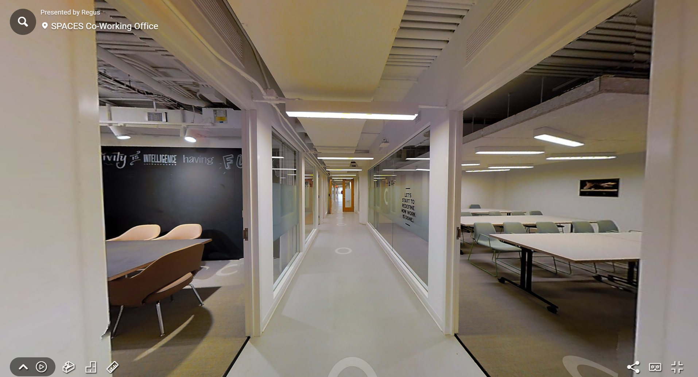

Toimistot

Virtuaalikierrokset - Toimistot
Toimistotilan vuokraaminen tai ostaminen on vaivallista ja tarkkaa, yritysten tulee löytää juuri oikean kokoinen tila omalle henkilöstölle. Virtuaalikierrokset tarjoavat vuokraajalle tai ostajalle mahdollisuuden nähdä tila netissä kuin he olisvat itse paikan päällä.
Kaksi tapaa esitellä tilojasi, 360-virtuaalikierrokset ja 3D-virtuaalikierrokset. Tutustu niiden eroihin:
Kierrokset voidaan halutessa toteuttaa myös google profiiliin
Hyödyt:
1. Tilojen esittely ja vuokraus
- Helpottaa tilojen vuokraamista: Potentiaaliset vuokralaiset voivat tutustua toimitiloihin etänä ennen fyysistä käyntiä.
- Tehokas markkinointiväline: Virtuaalikierros tekee toimitilasta houkuttelevamman – varsinkin jos tilat ovat tyylikkäät ja hyvin varustellut.
- Kansainväliset kiinnostuneet: Etänä toimivat yritykset tai sijoittajat voivat tarkastella tiloja mistä tahansa maailmalta.
2. Työntekijöiden ja vierailijoiden opastus
- Perehdytys uusille työntekijöille: Uudet työntekijät voivat tutustua toimiston tiloihin jo ennen ensimmäistä työpäivää.
- Vierailijaopastus: Asiakkaat tai kumppanit voivat etukäteen katsoa, missä vastaanotto, kokoushuoneet tai muut tärkeät tilat sijaitsevat.
- Esteettömyyden tarkistus: Mahdollistaa esteettömien kulkureittien ja palvelujen tarkastelun ennalta.
3. Tilasuunnittelu ja muutosprojektit
- Tukee tilamuutoksia ja sisustussuunnittelua: Suunnittelijat ja sisustusarkkitehdit voivat käyttää mallia työn tukena.
- Virtuaaliset pohjapiirrokset: Auttaa hahmottamaan tilankäyttöä ja kalustusta paremmin kuin tasopiirros.
- Helpottaa muuttoa: Muuttotiimit ja henkilöstö voivat valmistautua tilan käyttöön jo ennen siirtymistä uusiin toimitiloihin.
-
4. Turvallisuus ja kiinteistönhallinta
- Evakuointireittien ja turvatoimien esittely: Virtuaalikierrokseen voidaan merkitä poistumistiet, palosammuttimet ja kokoontumispaikat.
- Kiinteistöhuollon perehdytys: Siivous- tai ylläpitohenkilöstö voi tutustua rakennuksen tiloihin ja huoltopisteisiin ennakkoon.
- Riskienhallinta: Kierros tukee turvallisuussuunnittelua ja voi toimia osana dokumentaatiota esimerkiksi vakuutusasioissa.
-
5. Yrityksen brändi ja kulttuuri
- Yrityskulttuurin esittely: Virtuaalikierros voi toimia myös rekrytointityökaluna – se antaa kuvan yrityksen arjesta, tiloista ja tunnelmasta.
- Parantaa työnantajamielikuvaa: Moderni, avoin toimitilojen esittely viestii läpinäkyvyyttä ja nykyaikaisuutta.
6. Saavutettavuus ja saatavuus
- 24/7 pääsy tiloihin – etänä, milloin tahansa.
- Ei aikataulujen sovittelua: Kierros voidaan jakaa linkkinä, eikä sen katsominen vaadi erillistä tapaamista.
Miten prosessi etenee:
- Sopimus - Allekirjoitamme kauppa sopimuksen sähköisesti puolustaaksemme molempia päitä
- Suunnittelu - Sovitaan kuvauspäivä ja aika sekä käydään läpi toiveesi. (kuvauksen aikana olisi hyvä jos tilassa ei ole minkäänlaista liikettä, tämä parantaa kuvien laatua)
- 360° Valokuvaus tai skannaus - Taltioimme tilasi korkealaatuisilla 360 asteen kuvilla, tai skannaamme tilanne 360 kameralla.
- Editointi ja julkaisu - Viimeistelemme kierroksen ja lähetämme valmiin linkin kierroksesta. (tarvittaessa myös embed koodin)
Hinnat
- Hinnat riippuvat tilan koosta.
- 3D-virtuaalikierrokset alkavat 200€ (3kk ilmainen nettihotelli, jonka jälkeen 10€/kk)
- 360-virtuaalikierrokset alkavat 250€ (12kk ilmainen nettihotelli, jonka jälkeen 2€/kk)
Ota yhteyttä!
Ota yhteyttä niin kerromme miten voimme auttaa sinua hyödyntämään virtuaalitodellisuutta kohteessasi. Rakennamme juuri sinun tarpeisiisi sopivan ratkaisun!